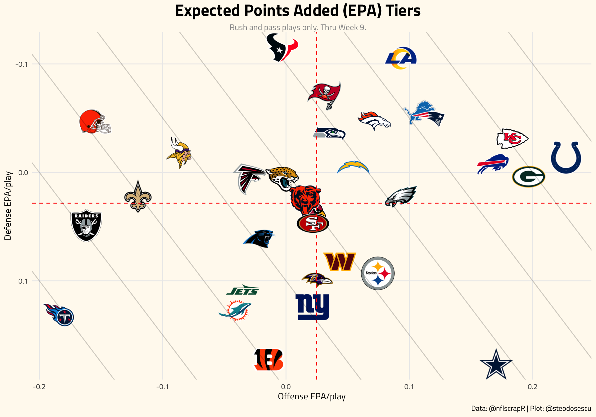
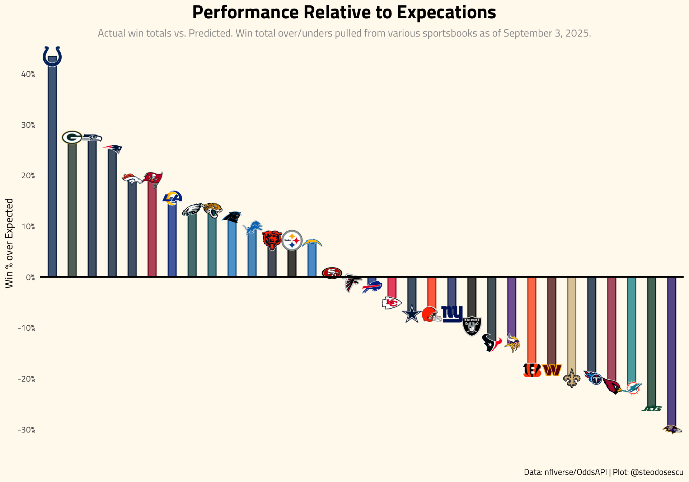

Teams Weekly Report
Last updated: 2021-12-13
![logo]()
Below you’ll find figures showing key advanced metrics I’m tracking for all 32 NFL teams.
Team Level Performance
Offensive vs. Defensive EPA
Expected Points Added: The change in Expected Points (EP) from one play to the next. EPA yields a single measure of the value of every play. Expected Points was created by the nflfastR team using a statistical model trained on historical data, and takes into account features like down, distance, time remaining, whether the game is being played indoors, etc. It helps answer the question “How good of a position is my team in to score as of now?” Higher EPA on offense is better, while a lower EPA on defense is more desirable.
EPA helps provide better context around what plays are more valuable. For example, a five-yard completion on third-and-4 is better than an eight-yard completion on third-and-9, despite the fact that the latter resulted in more yards.
EDITOR’S NOTE: There is currently an issue with the logos in the below plots that will get resolved soon. I know the wordmark logos seen below don’t look all that good.

EPA per Dropback by Team
The below isolates Expected Points Added for pass plays only to get a sense of how each team’s quarterback is performing on a per-dropback basis.

EPA vs CPOE per dropback by team
This below is another way to look at quarterback efficiency using EPA and Completion Percentage Over Expectation (CPOE) as measures. CPOE is simply the difference between a quarterback’s expected completion percentage and actual completion percentage. Expected completion percentage is a stat measuring the likelihood of a given pass being completed which factors in features like depth of target (air yards). It’s a better measure of accuracy than traditional completion percentage because it takes into account the location of where passes are being thrown.

Explosive Plays
Some teams are better than others at getting chunk plays. We’re defining explosive plays as those gaining 15 yards or more on rushes and 20 yards+ on passes. We’re highlighting the Bears simply because I’m a Bears fan and want to easily track how they stack up using this metric. Spoiler: they’ve been near the bottom of the league in explosive plays the past few years.

Fourth Downs
Teams are going for it on 4th Down more often nowadays. The below table shows each team’s go-for-it rates on fourth-and-short over the last decade-plus. Year-to-date teams have gone for it in fourth-and-short situations 33.7 percent of the time in 2021. We will track how each team fares on its fourth-down decision making throughout the season.
| 4th Down Decison Making | ||||||||||||
|---|---|---|---|---|---|---|---|---|---|---|---|---|
| Percentages shown are how often a team went for it when it on 4th & short, defined as less than 3 yards to go, and when win probability was between 20% and 80% (game-neutral situations). 2021 data is thru Week 14. | ||||||||||||
| team | 2012 | 2013 | 2014 | 2015 | 2016 | 2017 | 2018 | 2019 | 2020 | 2021 | 2012-2021 | |
 |
PHI | 44.4 | 55.6 | 30.0 | 50.0 | 77.8 | 64.7 | 60.0 | 62.5 | 63.6 | 100.0 | |
 |
IND | 18.8 | 21.4 | 37.5 | 11.1 | 38.5 | 7.7 | 43.8 | 63.2 | 68.4 | 90.0 | |
 |
CLE | 20.0 | 33.3 | 28.6 | 27.3 | 28.6 | 55.6 | 50.0 | 66.7 | 62.5 | 85.7 | |
 |
LA | 26.1 | 17.6 | 6.7 | 12.5 | 26.3 | 18.2 | 25.0 | 14.3 | 31.8 | 75.0 | |
 |
ARI | 25.0 | 11.1 | 20.0 | 33.3 | 16.7 | 10.5 | 22.2 | 53.3 | 76.5 | 71.4 | |
 |
JAX | 21.4 | 44.4 | 25.0 | 0.0 | 30.0 | 27.3 | 30.8 | 20.0 | 40.0 | 71.4 | |
 |
KC | 40.0 | 18.8 | 20.0 | 25.0 | 36.4 | 16.7 | 50.0 | 50.0 | 72.7 | 71.4 | |
 |
GB | 15.4 | 37.5 | 28.6 | 40.0 | 43.8 | 37.5 | 22.2 | 40.0 | 81.8 | 70.0 | |
 |
LAC | 30.8 | 23.8 | 25.0 | 0.0 | 38.5 | 13.3 | 20.0 | 27.3 | 44.4 | 70.0 | |
 |
NO | 20.0 | 28.6 | 33.3 | 42.9 | 53.8 | 50.0 | 68.8 | 33.3 | 41.2 | 70.0 | |
 |
CAR | 54.5 | 46.7 | 27.8 | 35.7 | 22.2 | 25.0 | 41.7 | 70.0 | 72.7 | 66.7 | |
 |
DET | 14.3 | 26.3 | 28.6 | 16.7 | 35.0 | 7.1 | 21.1 | 28.6 | 50.0 | 64.7 | |
 |
DEN | 15.4 | 37.5 | 0.0 | 26.1 | 15.8 | 33.3 | 29.4 | 23.1 | 28.6 | 63.6 | |
 |
DAL | 23.5 | 11.1 | 57.1 | 19.0 | 21.1 | 40.0 | 47.1 | 50.0 | 76.9 | 62.5 | |
 |
ATL | 5.9 | 26.7 | 10.0 | 38.5 | 58.3 | 22.2 | 33.3 | 71.4 | 71.4 | 61.5 | |
 |
BUF | 9.1 | 22.7 | 15.4 | 20.0 | 36.4 | 16.7 | 62.5 | 60.0 | 53.8 | 57.1 | |
 |
LV | 13.3 | 7.1 | 7.1 | 40.0 | 12.5 | 38.9 | 38.5 | 35.7 | 63.2 | 55.6 | |
 |
CHI | 44.4 | 40.0 | 31.2 | 17.4 | 40.0 | 0.0 | 38.5 | 23.1 | 37.5 | 54.5 | |
 |
SF | 7.1 | 25.0 | 35.7 | 44.4 | 50.0 | 33.3 | 12.5 | 43.8 | 47.1 | 54.5 | |
 |
BAL | 20.0 | 33.3 | 52.6 | 40.9 | 41.2 | 46.2 | 60.0 | 90.0 | 50.0 | 50.0 | |
 |
HOU | 11.8 | 26.7 | 33.3 | 50.0 | 33.3 | 25.0 | 31.2 | 66.7 | 44.4 | 50.0 | |
 |
WAS | 35.3 | 13.3 | 23.1 | 16.7 | 25.0 | 28.6 | 42.9 | 12.5 | 46.2 | 50.0 | |
 |
MIN | 13.3 | 26.3 | 26.7 | 20.0 | 26.7 | 14.3 | 50.0 | 33.3 | 57.1 | 45.5 | |
 |
TEN | 37.5 | 36.4 | 7.1 | 10.5 | 0.0 | 25.0 | 33.3 | 40.0 | 50.0 | 44.4 | |
 |
NYJ | 25.0 | 0.0 | 16.7 | 20.0 | 17.6 | 17.6 | 30.8 | 70.0 | 50.0 | 42.9 | |
 |
NYG | 10.0 | 21.4 | 30.0 | 14.3 | 27.8 | 23.5 | 54.5 | 55.6 | 76.9 | 40.0 | |
 |
MIA | 21.4 | 22.2 | 23.1 | 23.1 | 14.3 | 33.3 | 25.0 | 50.0 | 40.0 | 33.3 | |
 |
TB | 36.4 | 25.0 | 50.0 | 14.3 | 30.0 | 18.2 | 33.3 | 46.2 | 36.4 | 33.3 | |
 |
PIT | 34.8 | 33.3 | 22.2 | 33.3 | 31.2 | 25.0 | 38.5 | 33.3 | 42.9 | 25.0 | |
 |
CIN | 35.7 | 40.0 | 18.8 | 40.0 | 23.1 | 16.7 | 45.5 | 46.2 | 37.5 | 22.2 | |
 |
NE | 16.7 | 23.5 | 18.8 | 35.7 | 9.1 | 36.4 | 47.1 | 35.7 | 40.0 | 20.0 | |
 |
SEA | 15.8 | 18.2 | 16.7 | 25.0 | 40.0 | 25.0 | 43.8 | 11.1 | 27.3 | 18.2 | |
| DATA: nflfastR TABLE: @steodosescu |
||||||||||||
Copyright © 2021 Stephan Teodosescu